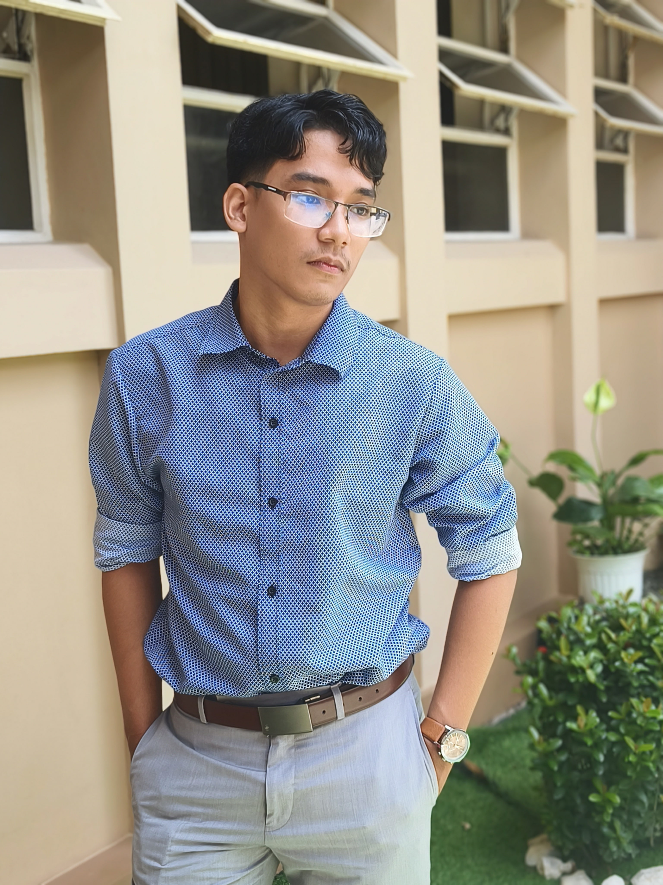

Kynn Lyzander V. Elegado
Computer Scientist & Data Science Specialist
Highly-motivated Computer Scientist specializing in Data Science. I possess hands-on experience in building end-to-end AI pipelines, benchmarking CNN models, and engineering generative AI (SLM).
Education
Manuel S. Enverga University
BS Computer Science, Specialization in Data Science (2022-2026)
Finalist - NextGenPH: Youth Innovators Contest (2025)
Technical Arsenal
Programming & AI
- Python: NumPy, Pandas, Scikit-learn, TensorFlow/Keras
- Models: CNNs, SLMs (Generative AI)
- Languages: Java, C, C++, R
Data Science
- Data Cleaning & Visualization
- Time Series Analysis
- Supervised Learning (Regression)
- Pipeline Design
Web & Soft Skills
- React, HTML/CSS, Bootstrap
- Project Management
- Problem-Solving
- Professional Communication